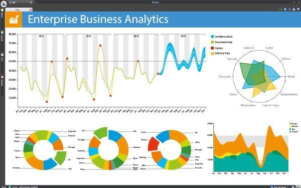

Information handling highlights include the assortment and association of crude information to deliver meaning. Information demonstrating takes complex informational collections and showcases them in a visual graph or diagram. This makes it absorbable and simple to decipher for clients attempting to use that information to decide.
Information mining permits clients to remove and examine information from alternate points of view and sum up it into significant bits of knowledge. It is particularly helpful on huge unstructured informational collections gathered over some stretch of time.
Big Data analytics tools should enable data import from sources such as Microsoft Access, Microsoft Excel, text files and other flat files. Being able to merge data from multiple sources and in multiple formats will reduce labor by preventing the need for data conversion and speed up the overall process by importing directly to the system.
Character the executives (or personality and access the executives) is the authoritative procedure for controlling who approaches your information. Character the board usefulness oversees distinguishing information for everything that approaches a framework including singular clients, PC equipment and programming applications.
Personality the executives additionally manages issues including how clients increase a character with get to, assurance of those characters and backing for other framework insurances, for example, organize conventions and passwords. It decides if a client approaches a framework and the degree of access that client has consent to use.
Misrepresentation examination include an assortment of extortion recognition functionalities. An excessive number of organizations are receptive with regards to false exercises — they manage the effect instead of proactively forestalling it. Information investigation devices can assume a job in extortion location by offering repeatable tests that can run on your information whenever, guaranteeing you'll know whether anything is out of order. You likewise have more extensive inclusion of your information in general as opposed to depending on spot checking at money related exchanges. Examination can be an early admonition device to rapidly and effectively recognize possibly false movement before it gets an opportunity to affect your business on the loose.